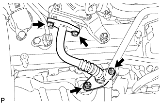
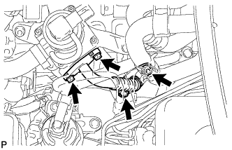
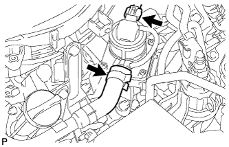
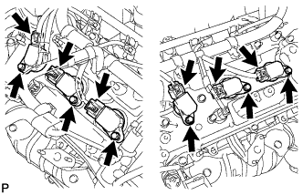

КАТУШКА ЗАЖИГАНИЯ И СВЕЧА ЗАЖИГАНИЯ > СНЯТИЕ |
| 1. СНИМИТЕ ВЕРХНЕЕ УПЛОТНЕНИЕ КРОНШТЕЙНА РАДИАТОРА |
Освободите 13 фиксаторов и снимите верхнее уплотнение кронштейна радиатора.
| 2. СНИМИТЕ ДЕКОРАТИВНУЮ КРЫШКУ V-ОБРАЗНОГО ДВИГАТЕЛЯ |
 |
Поднимите переднюю часть декоративной крышки V-образного двигателя, чтобы открепить 2 штифта. Затем снимите 2 крюка декоративной крышки V-образного двигателя с кронштейна, чтобы снять декоративную крышку V-образного двигателя.
| *1 | Штифт |
| *2 | Крюк |
| 3. СНИМИТЕ ШЛАНГ И КРЫШКУ ВОЗДУШНОГО ФИЛЬТРА |
 |
Снимите крышку и шланг воздушного фильтра.
Отсоедините разъем датчика массового расхода воздуха, вакуумный шланг, вентиляционный шланг и 4 хомута.
Ослабьте хомут.
Отсоедините 4 откидных защелки, выверните болт и снимите крышку и шланг воздушного фильтра.
| 4. СНИМИТЕ КОРПУС ВОЗДУШНОГО ФИЛЬТРА В СБОРЕ |
Снимите фильтрующий элемент воздушного фильтра.
 |
Освободите зажим жгута проводов.
Выверните 3 болта и снимите корпус воздушного фильтра.
| 5. СНИМИТЕ ВОЗДУШНЫЙ ПАТРУБОК (для моделей со вспомогательной системой подачи воздуха в нейтрализатор) |
|  |
Выверните 2 болта, отверните 2 гайки и снимите воздушный патрубок.
Снимите 2 прокладки с воздушного патрубка.
| 6. СНИМИТЕ КОМПЛЕКТ КЛАПАНА СИСТЕМЫ СНИЖЕНИЯ ТОКСИЧНОСТИ ОТРАБОТАВШИХ ГАЗОВ (для моделей со вспомогательной системой подачи воздуха в нейтрализатор) |
 |
Отсоедините разъем комплекта клапана системы снижения токсичности отработавших газов.
Отсоедините воздушный шланг № 1 от комплекта клапана системы снижения токсичности отработавших газов.
Отверните 3 гайки и снимите комплект клапана системы снижения токсичности отработавших газов.
| 7. СНИМИТЕ ВОЗДУШНЫЙ ПАТРУБОК № 2 (для моделей со вспомогательной системой подачи воздуха в нейтрализатор) |
|  |
Выверните 2 болта, отверните 2 гайки и снимите воздушный патрубок № 2.
Снимите 2 прокладки с воздушного патрубка № 2.
| 8. СНИМИТЕ КОМПЛЕКТ КЛАПАНА СИСТЕМЫ СНИЖЕНИЯ ТОКСИЧНОСТИ ОТРАБОТАВШИХ ГАЗОВ № 2 (для моделей со вспомогательной системой подачи воздуха в нейтрализатор) |
|  |
Отсоедините разъем комплекта клапана системы снижения токсичности отработавших газов № 2.
Отсоедините воздушный шланг № 3.
 |
Отверните 3 гайки и снимите комплект клапана системы снижения токсичности отработавших газов № 2.
| 9. СНИМИТЕ КАТУШКУ ЗАЖИГАНИЯ В СБОРЕ |
|  |
Отсоедините разъемы 6 катушек зажигания.
Выверните 6 болтов и снимите 6 катушек зажигания.
| 10. СНИМИТЕ СВЕЧУ ЗАЖИГАНИЯ |
Снимите 6 свечей зажигания.